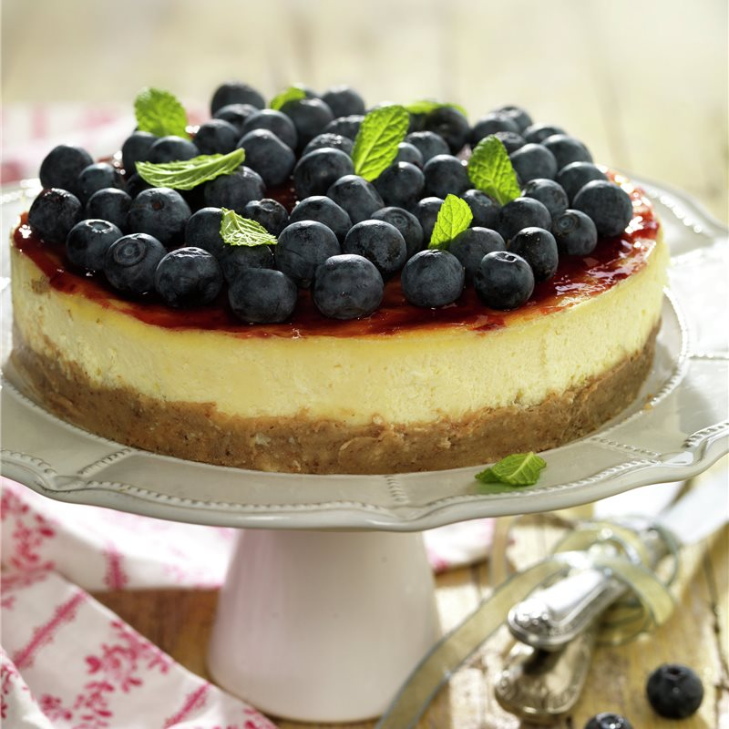

Tarta de queso mascarpone y arándanos
a

Ingredientes
Para la base
- 1 paquete de galletas
- Mantequilla
Para el relleno
- 250g de queso mascarpone
- 200ml de nata para montar
- 100g de azúcar
- 1 sobre de gelatina
- Arándanos
Preparación
- Tritura las galletas y mézclalas con mantequilla derretida.
- Extiende la mezcla en un molde y enfríala en la nevera.
- Bate el queso mascarpone con el azúcar.
- Monta la nata e incorpórala a la mezcla anterior.
- Disuelve la gelatina según las instrucciones y añádela.
- Vierte la mezcla sobre la base y enfría en la nevera hasta que solidifique.
- Decora con arándanos antes de servir.
Dificultad: bajaCocina: reposteríaVegetariana: síCelíacos: noAnticáncer: no
‚úîüç≥üå±
Autor:Anónimo